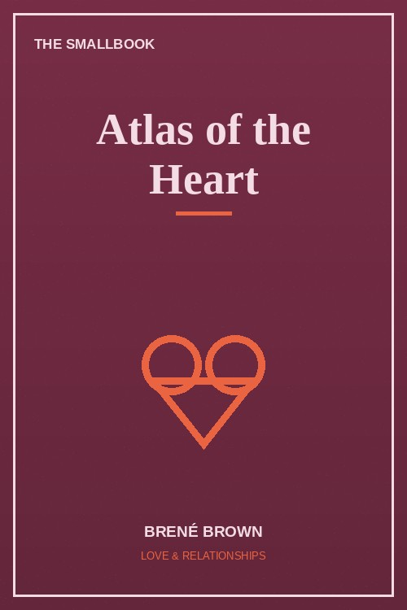

Why Did Harvey Weinstein and the System That Protected Him Fail?
The Open Secret With an Office
What happened
Harvey Weinstein co founded Miramax and then the Weinstein Company, and for three decades was among the most powerful men in film: the producer behind era defining hits and a feared Oscar campaigner. He was also, as reporting in October 2017 established in irrefutable detail, a serial predator who assaulted, harassed and intimidated women across his industry for decades, protected by settlements with confidentiality clauses, by lawyers and private investigators, by complicit executives and board members, and by a town whose open secret economy priced women's careers against his displeasure. The New York Times and New Yorker investigations, by Jodi Kantor, Megan Twohey and Ronan Farrow, broke the story after years of attempts had been softened or killed. Over eighty women came forward. The Weinstein Company collapsed into bankruptcy within months. Harvey Weinstein was convicted in New York in 2020 of rape and a criminal sex act, sentenced to 23 years; a Los Angeles court added 16 more. A New York appeals court overturned the New York conviction in 2024 over evidentiary rulings and ordered a new trial, whose proceedings continued amid his failing health. The global MeToo movement his exposure ignited restructured workplace law and norms far beyond film, which is why this autopsy is of the protection system as much as the man.
The fatal mistake
The predator was the crime; the system was the career. Its components each failed in their special way: executives and directors who heard accounts for years and chose the slate over the women; settlement machinery that converted felonies into HR transactions with silence purchased as a contract term; journalists and outlets that let stories die under legal and commercial pressure; agents who kept sending clients into the hotel rooms of the town's worst kept secret. Every institution involved could recite standards it was not enforcing. The deepest failure is the most general: a whole economy had quietly priced some people's safety as a cost of doing business with genius, and invoiced it, as usual, to those with the least power to refuse the bill.
The lesson
An open secret is a policy. When everyone knows and nothing happens, the organisation has voted, and its values are the result, not the mission statement. Confidential settlements that purchase silence about crimes convert legal departments into accomplices; legislatures that later banned them for harassment were reading this autopsy. Genius is not a currency that should clear such debts: the work was good and the price was still obscene. And the women who spoke first, at professional cost, with receipts, did what institutions existed to do and had declined. Accountability systems should be audited by a single question: would they have stopped him in year two, or only in year thirty, when the reporting did it for them?
The antidote book

You cannot navigate emotions you cannot name. Brené Brown maps eighty seven emotions and experiences, because the words we have for our inner lives decide what we can do with them.
READ THE SUMMARY OPEN INTERACTIVE BOOKQuestions people ask about Harvey Weinstein and the System That Protected Him
Why did Harvey Weinstein and the System That Protected Him fail? The predator was the crime; the system was the career. Its components each failed in their special way: executives and directors who heard accounts for years and chose the slate over the women; settlement machinery that converted felonies into HR transactions with silence purchased as a contract term; journalists and outlets that let stories die under legal and commercial pressure; agents who kept sending clients into the hotel rooms of the town's worst kept secret. Every institution involved could recite standards it was not enforcing. The deepest failure is the most general: a whole economy had quietly priced some people's safety as a cost of doing business with genius, and invoiced it, as usual, to those with the least power to refuse the bill.
How much was lost? A studio system that protected its predator for decades
What is the lesson? An open secret is a policy. When everyone knows and nothing happens, the organisation has voted, and its values are the result, not the mission statement. Confidential settlements that purchase silence about crimes convert legal departments into accomplices; legislatures that later banned them for harassment were reading this autopsy. Genius is not a currency that should clear such debts: the work was good and the price was still obscene. And the women who spoke first, at professional cost, with receipts, did what institutions existed to do and had declined. Accountability systems should be audited by a single question: would they have stopped him in year two, or only in year thirty, when the reporting did it for them?
Harvey Weinstein and the System That Protected Him kyun fail hua? In simple English: The predator was the crime; the system was the career. Its components each failed in their special way: executives and directors who heard accounts for years and chose the slate over the women; settlement machinery that converted felonies into HR transactions... The cost was A studio system that protected its predator for decades.
Keep digging
More fame and fortune failures · Open the full Graveyard
Read the antidote book summary: Atlas of the Heart
Related failures
- Why did Yeezy fail? 2022 · One Month of Statements Turned a $1.5 Billion Partnership Into a Write-Off
- Why did Rana Kapoor fail? 2020 · 'Diamonds Are Forever' - Loans Weren't
- Why did Q Magazine fail? 2020 · The music monthly closes
- Why did V.G. Siddhartha fail? 2019 · The Coffee King Who Carried It Alone
- Why did Playboy and the Empire the Internet Retired fail? 2017 · The Empire the Internet Retired
- Why did Johnny Depp fail? 2017 · $30,000 a Month on Wine
They paid full price. You get the lesson in simple English.